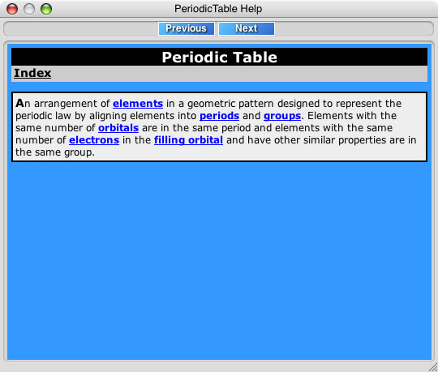

The Help Panel can be accessed by clicking on any .
The information shown in the Help Panel is context sensitive and related to the area the where the was clicked.
Clicking on any of the highlighted linked topics like: element will bring up the help for that topic.
Clicking on the Previous or Next buttons will naviagate backward and forward in the history of the links clicked.
Clicking on the Index link will display a list of all topics.
Help Panel
